เชียงรายเป็นจังหวัดที่อยู่เหนือสุดของประเทศไทยและมีประวัติศาสตร์ยาวนาน อีกทั้งยังมีป่าไม้ดอยสูงที่งดงามและเป็นแหล่งกำเนิดต้นน้ำและน้ำตกหลายแห่ง
นอกจากนี้ เชียงรายยังมีประชากรหลากหลายเชื้อชาติที่มีวัฒนธรรมและวิถีชีวิตที่เป็นเอกลักษณ์ ซึ่งทำให้เชียงรายได้รับความสนใจจากนักท่องเที่ยวทั้งชาวไทยและชาวต่างชาติ
กระปุกดอทคอมขอแนะนำสถานที่ท่องเที่ยวที่ไม่ควรพลาดเมื่อมาเยือนเชียงราย
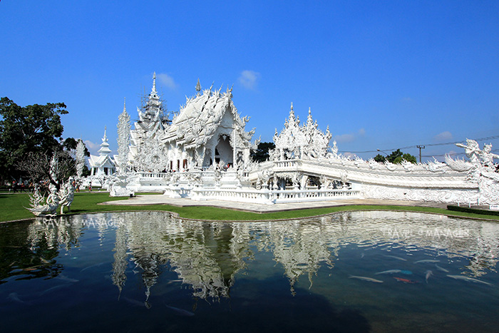
วัดที่ออกแบบโดยอาจารย์เฉลิมชัย โฆษิตพิพัฒน์ มีการแกะสลักและศิลปะที่ทันสมัยและงดงาม
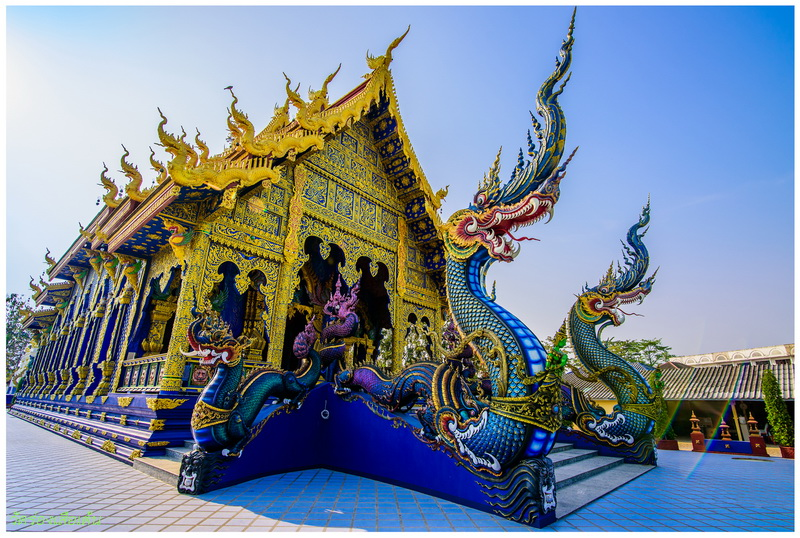
โดดเด่นด้วยสถาปัตยกรรมสีฟ้าสดใสและภาพจิตรกรรมฝาผนังที่งดงาม
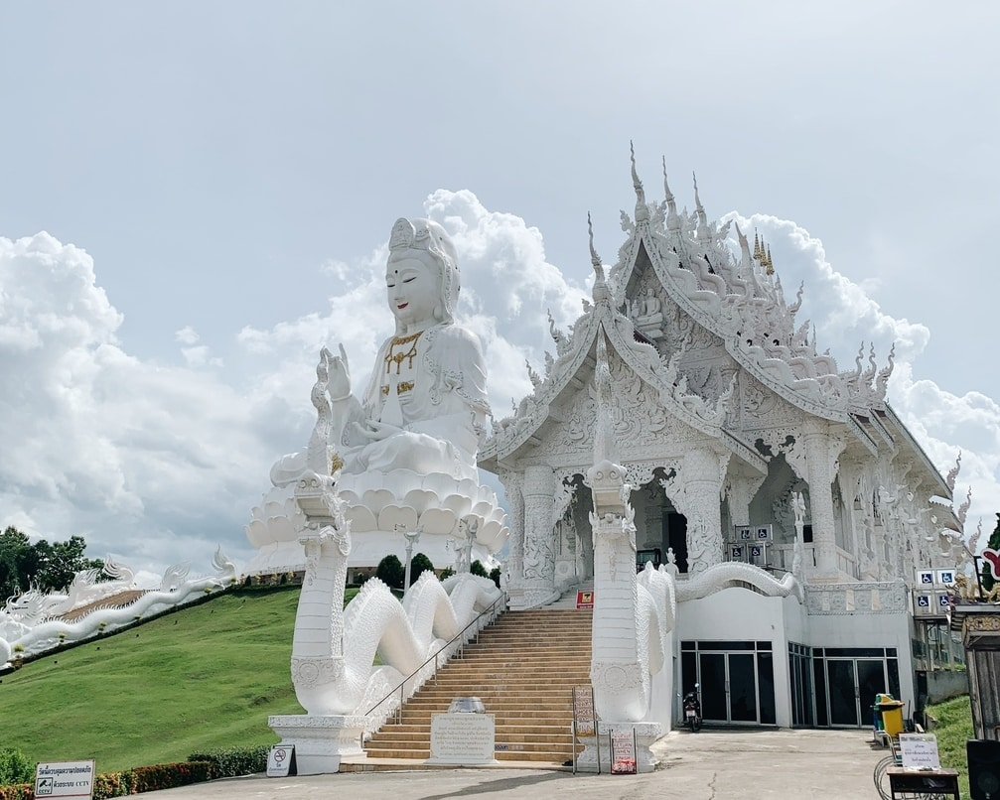
มีรูปปั้นเจ้าแม่กวนอิมขนาดใหญ่และเจดีย์ 9 ชั้นที่ให้ทัศนียภาพที่งดงาม
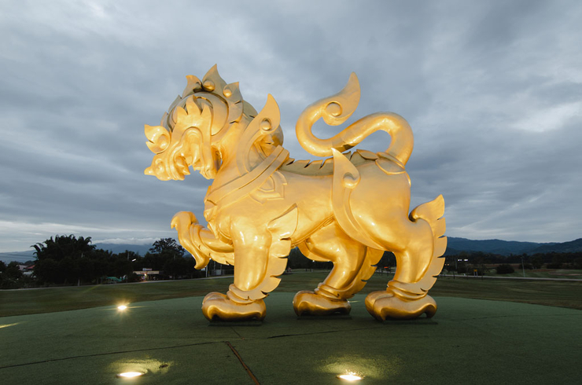
สวนเกษตรขนาดใหญ่ที่มีไร่ชา สวนดอกไม้ และกิจกรรมกลางแจ้ง
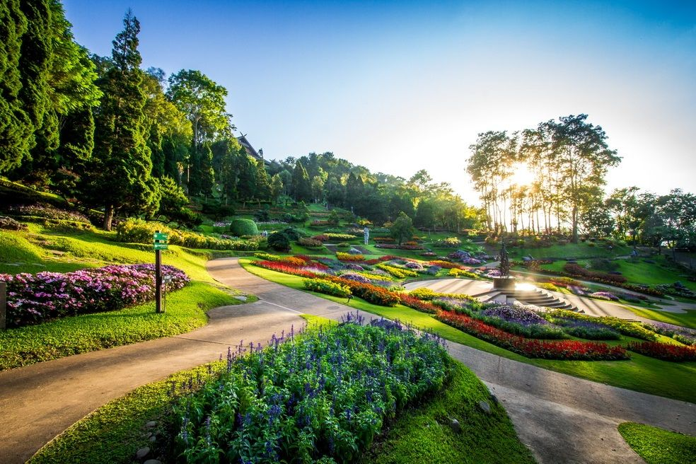
มีพระตำหนักดอยตุงและสวนแม่ฟ้าหลวงที่มีการจัดแสดงดอกไม้ที่สวยงาม
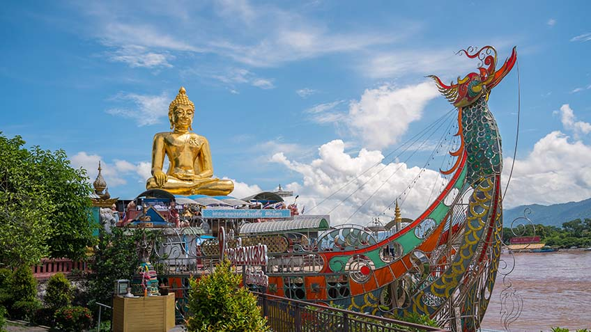
พื้นที่ประวัติศาสตร์ที่สามประเทศ ไทย ลาว และพม่า มาบรรจบกัน
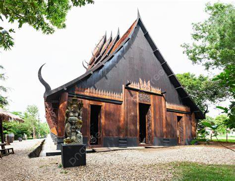
พิพิธภัณฑ์ที่มีงานศิลปะดั้งเดิมและร่วมสมัยโดยอาจารย์ถวัลย์ ดัชนี
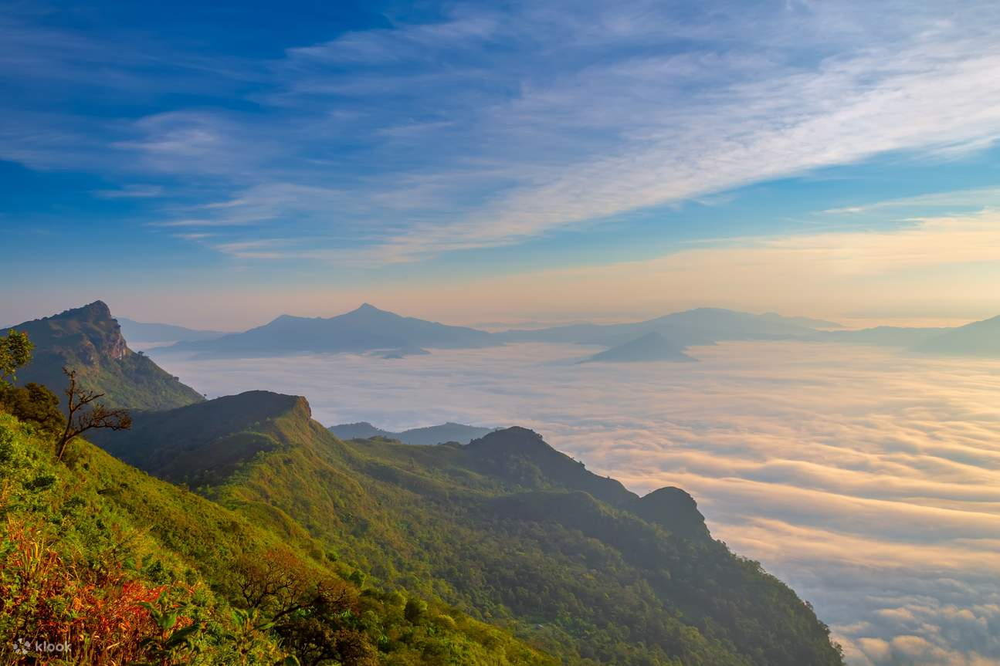
จุดชมวิวพระอาทิตย์ขึ้นและทะเลหมอกที่สวยที่สุดในเชียงราย
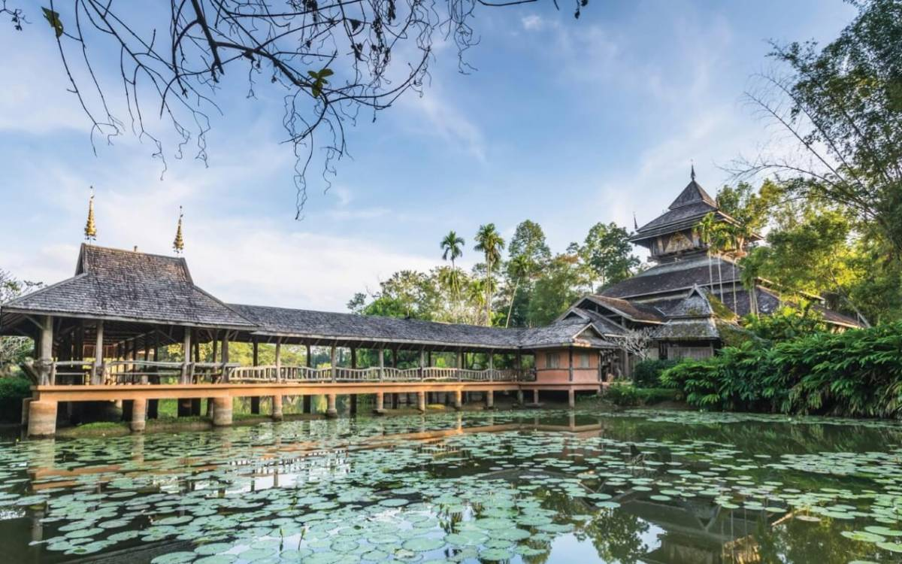
จัดแสดงสถาปัตยกรรมล้านนาและงานศิลปะหลากหลาย
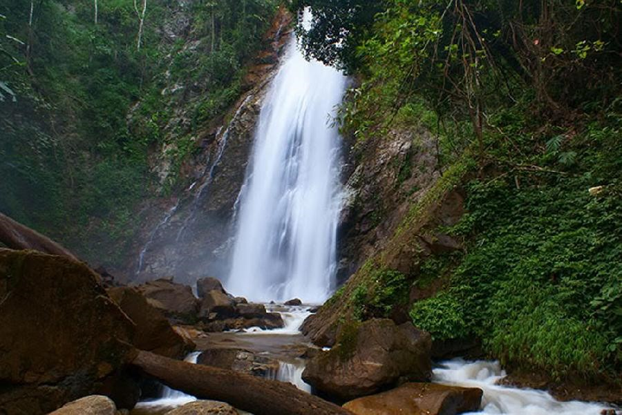
น้ำตกที่สูงที่สุดในเชียงราย รายล้อมด้วยป่าธรรมชาติ
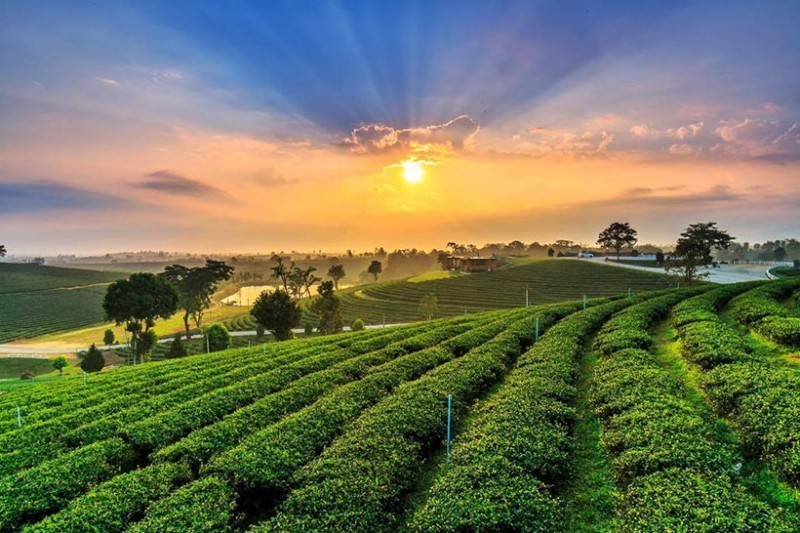
ไร่ชาที่มีวิวสวยพร้อมคาเฟ่และกิจกรรมชิมชา
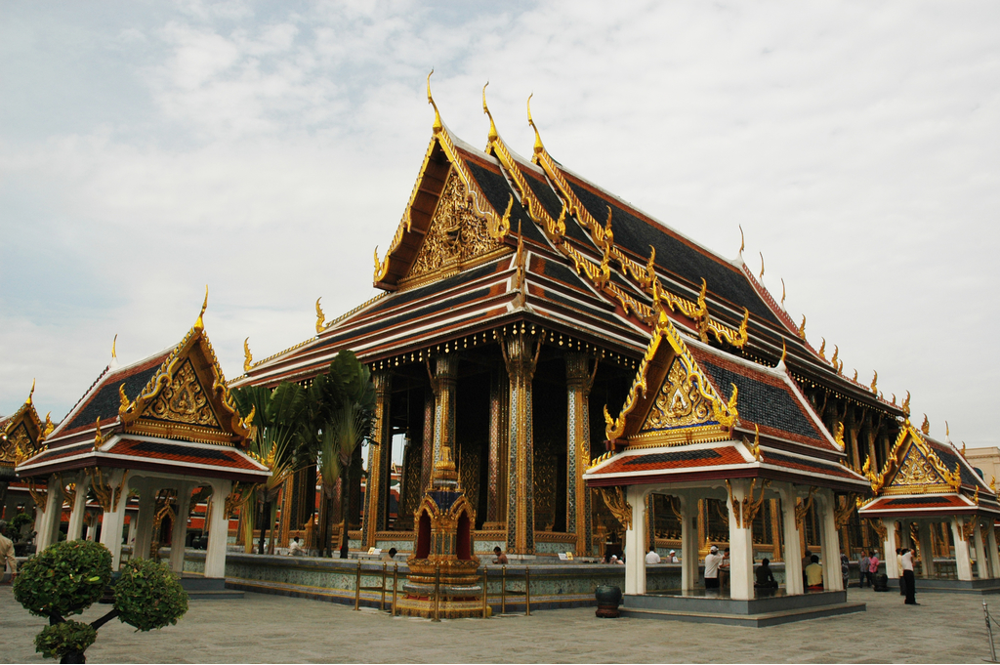
วัดโบราณที่เคยประดิษฐานพระแก้วมรกต ปัจจุบันอยู่ในกรุงเทพ
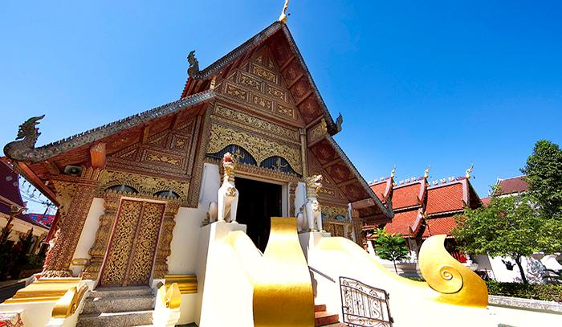
วัดที่มีสถาปัตยกรรมล้านนาและพระพุทธรูปสำคัญ
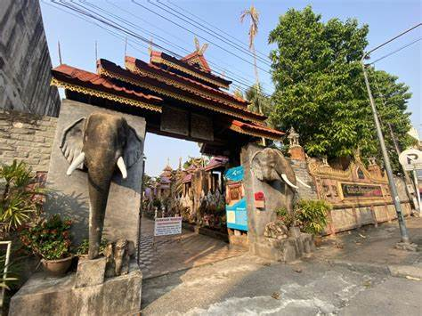
จัดแสดงศิลปวัตถุล้านนาและของเก่าหายากจากภาคเหนือ
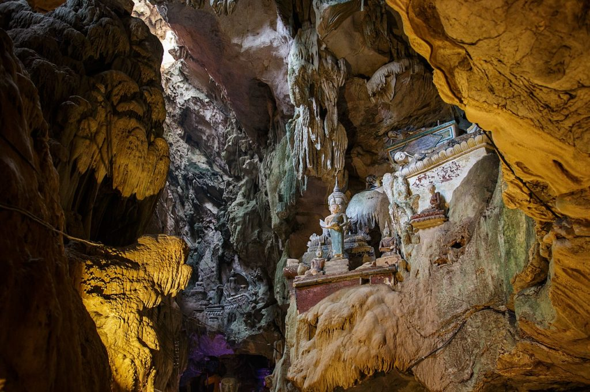
สถานที่กู้ภัยทีมฟุตบอลดัง ปัจจุบันเป็นแหล่งเรียนรู้และท่องเที่ยว
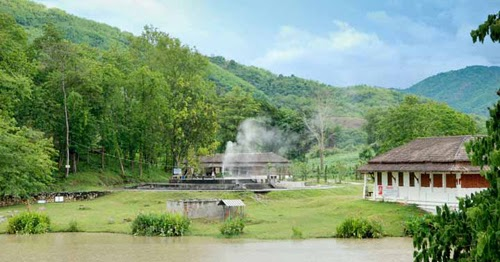
น้ำพุร้อนธรรมชาติ บรรยากาศเงียบสงบ เหมาะแก่การพักผ่อน
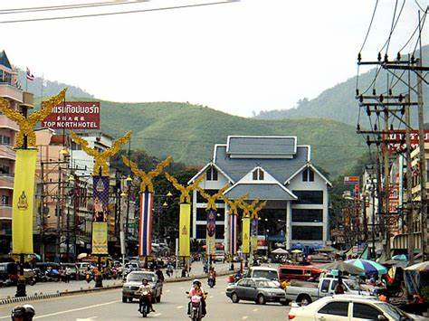
เมืองเหนือสุดของไทย มีตลาดชายแดนและของถูก
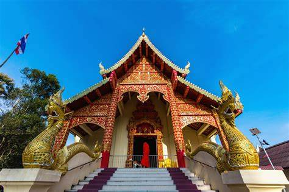
วัดที่อยู่บนเขา มองเห็นวิวเมืองเชียงราย
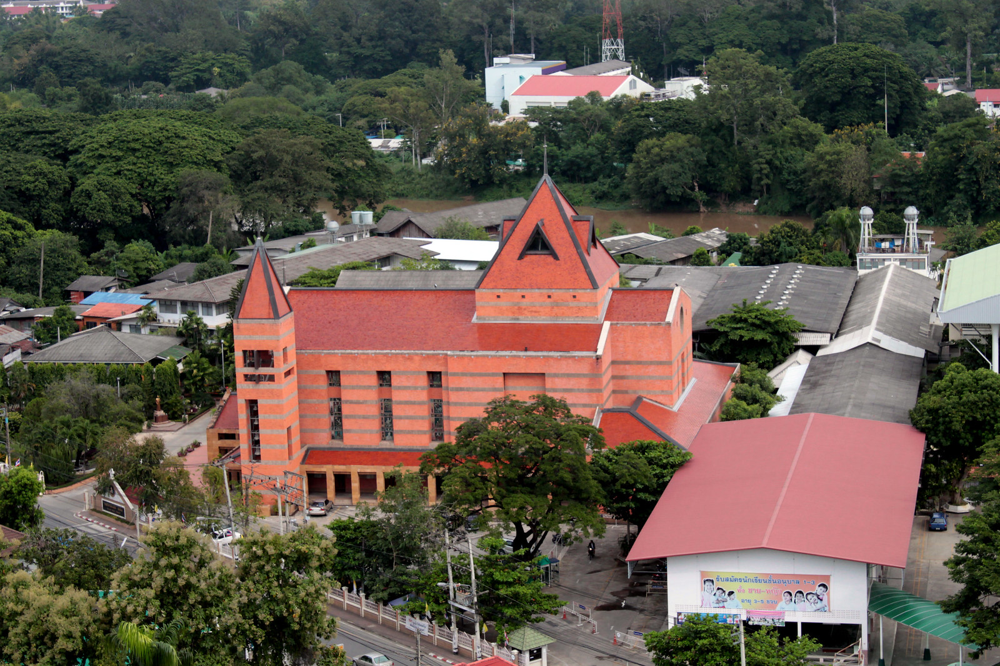
โบสถ์คาทอลิกสวยงาม บรรยากาศสงบ
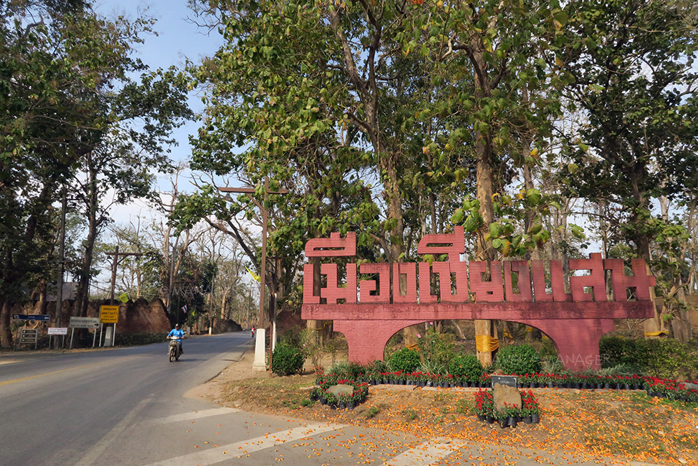
เมืองโบราณริมโขง มีโบราณสถานและวัดเก่าแก่